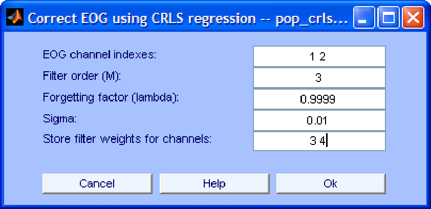

Next: Stable Recursive Least Squares
Up: EOG removal using regression
Previous: Least Mean Squares (LMS)
Contents
The interface of this algorithm is shown in Fig. 2. Most parameters shown in that interface were already explained when we discussed the LMS algorithm. There are, however, two new parameters:
- Forgetting factor (lambda). This parameter defines how fast the RLS algorithm should forget past data samples. If we set it to 1 the algorithm uses all available data samples to estimate the filter weights. As we decrease this value the contribution of past samples to the weight estimation decreases. This is useful in a non-stationary environment where the spatial pattern of ocular artifacts (and therefore the optimum filter weights) vary considerably in time. By contrary, in a stationary environment, discarding past samples leads to higher errors in the estimation of the optimum filter weights.
- Sigma. This parameter defines the initial state of the filter. Please read [11] for details.
Figure 2:
Interface window for EOG removal using the RLS algorithm.
|  |
Next: Stable Recursive Least Squares
Up: EOG removal using regression
Previous: Least Mean Squares (LMS)
Contents
gomezher
2007-12-10